CURACONNECT
Fazendo a diferença com pequenos detalhes!
A tecnologia certa para conectar médicos, pacientes e familiares com eficiência e segurança.
Fazendo a diferença com pequenos detalhes!
A tecnologia certa para conectar médicos, pacientes e familiares com eficiência e segurança.

A excelência começa nos detalhes que importam.
O CURACONNECT é uma plataforma digital criada para humanizar a comunicação hospitalar. Alinhado à ODS 3 — Saúde e Bem-Estar, ele conecta médicos, pacientes e famílias, promovendo cuidado com presença, empatia e clareza, mesmo quando a distância é inevitável.
A falta de informação em ambientes hospitalares gera angústia para as famílias e sobrecarga para os profissionais de saúde. Longas esperas, silêncio e ruídos na comunicação enfraquecem a confiança e desumanizam o cuidado em momentos críticos.

O CURACONNECT resolve esse problema com um aplicativo inteligente, integrado aos sistemas hospitalares, que envia atualizações seguras em tempo real. O resultado é mais eficiência para o hospital, mais tempo para o médico cuidar e mais tranquilidade para quem espera. 💚
Tecnologia invisível para que o toque humano seja o destaque.

Durante a internação, o paciente enfrenta ansiedade e insegurança devido à falta de informações claras sobre seu estado de saúde.
O CURACONNECT garante que o paciente tenha seus dados organizados e compartilhados de forma segura, proporcionando mais clareza e controle sobre seu tratamento.
Menos cliques, mais medicina. Uma interface desenhada para não atrapalhar seu raciocínio clínico.
Com relatórios automáticos e comunicação eficiente, o CuraConnect ajuda o médico a manter clareza sobre o estado do paciente e facilita decisões clínicas, reduzindo estresse e melhorando a qualidade do cuidado.
O médico lida com sobrecarga de trabalho e falta de tempo para atualizar familiares, enquanto precisa tratar doenças e cuidar da enfermidade do paciente. A pressão para tomar decisões rápidas aumenta a tensão profissional.
O aplicativo organiza e compartilha informações médicas de forma segura, permitindo que o médico economize tempo e se concentre no tratamento do paciente, sem comprometer a comunicação com a família.
Ofereça tranquilidade e facilidade. A jornada do parente deve ser simples e acolhedora.
O familiar marca consultas 24h, sem estresse telefônico.
Avisos automáticos de horário e medicação enviados ao responsável.
Conexão direta com o médico através de um clique seguro, além de consultas com o Psicologo, seja presencialmente ou online.
Receitas e exames enviados digitalmente para o parente logo após o atendimento.
Uma infraestrutura robusta para unificar atendimento, faturamento e estoque da sua rede.
Com licenciamento ao SUS, assinaturas de médicos e serviços premium, o hospital gera receita recorrente e escalável com baixo custo adicional.
Automatizando a comunicação com familiares e integrando relatórios médicos, o CURACONNECT economiza tempo da equipe e reduz gastos administrativos.
Hospitais que adotam o CuraConnect oferecem experiência humanizada e transparente, fortalecendo confiança de pacientes e familiares e atraindo novos contratos e convênios.
A tecnologia agiliza fluxos internos, libera profissionais para cuidados diretos e diminui retrabalho, aumentando a produtividade hospitalar.
Todas as informações do paciente são protegidas com criptografia e conformidade com LGPD, garantindo privacidade e segurança hospitalar.
Não entregamos apenas software, entregamos estratégia. Nossos consultores analisam seu fluxo para criar a arquitetura ideal.